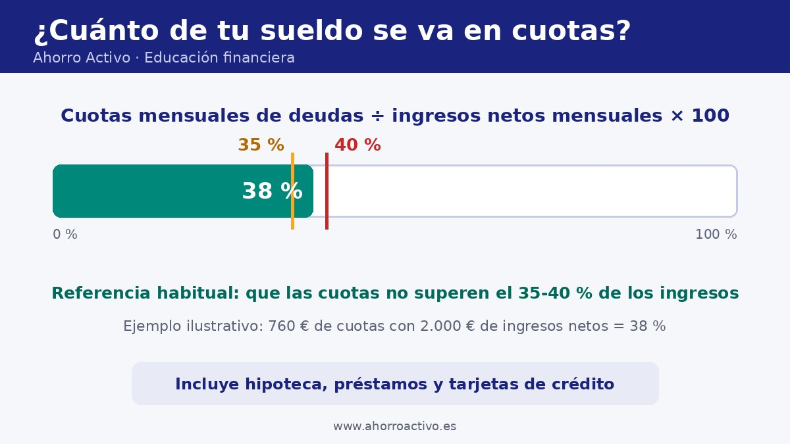

Por David Finanzas
Educación financiera |
Cuánta deuda es demasiado: cómo calcular tu nivel de endeudamiento
Pedir un préstamo, pagar a plazos o usar la tarjeta no es malo en sí. El problema llega cuando las cuotas mensuales se comen una parte tan grande de tus ingresos que no queda margen para vivir, ahorrar o afrontar un imprevisto. A eso se le llama sobreendeudamiento.
En esta guía verás una fórmula sencilla para calcular tu nivel de endeudamiento, la referencia que dan las fuentes oficiales, un ejemplo con cifras inventadas y qué mirar antes de financiar una compra. Es contenido divulgativo: no recomienda ningún producto ni entidad.

La fórmula: cuotas entre ingresos
Suma todo lo que pagas cada mes en deudas: hipoteca, préstamos y tarjetas de crédito (también las compras aplazadas). Divide ese total entre tus ingresos netos mensuales, es decir, lo que realmente cobras, y multiplica por 100. El resultado es el porcentaje de tus ingresos que ya está comprometido antes de pagar comida, luz o transporte.
Qué porcentaje se considera razonable
Finanzas para Todos, el portal de educación financiera del Banco de España y la CNMV, recoge que, según muchos expertos, las cuotas de las deudas no deberían superar el 40 % de los ingresos mensuales, y que otros fijan el límite en el 35 %. Es una referencia orientativa, no una norma: la misma fuente reconoce que hoy puede ser difícil no superar el 40 %, pero lo mantiene como objetivo.
Ejemplo ilustrativo con cifras inventadas
Imagina a alguien con 2.000 € de ingresos netos al mes. Los importes son un ejemplo para entender el cálculo, no una referencia de lo que debe pagar nadie.
| Cuota mensual | Importe |
|---|---|
| Hipoteca | 520 € |
| Préstamo del coche | 180 € |
| Tarjeta de crédito | 60 € |
| Total de cuotas | 760 € |
| Nivel de endeudamiento | 760 ÷ 2.000 × 100 = 38 % |
Con un 38 % estaría por debajo del 40 % pero por encima del 35 %: sin incumplir la referencia, el margen es estrecho. Si además quisiera financiar otra compra con una cuota de 140 €, el total sería 900 € y el nivel subiría al 45 %, fuera de la referencia.
Cómo bajar tu nivel de endeudamiento
- Haz un presupuesto para ver cuánto margen real tienes. Aquí te explico cómo hacerlo en cinco pasos.
- No añadas cuotas nuevas mientras estés cerca o por encima de la referencia.
- Evita endeudarte más en épocas difíciles: los intereses aumentan tus gastos justo cuando menos margen tienes.
- Ten un colchón. Un fondo de emergencia (3 a 6 meses de gastos es la pauta habitual) evita pedir crédito ante un imprevisto.
- Recorta gastos para liberar dinero, empezando por los gastos hormiga.
Antes de financiar una compra
Con las compras de fin de año, el Banco de España recuerda que algo fácil de comprar y de financiar no es necesariamente fácil de devolver. Algunos criterios que recogen sus guías:
- Compara con la TAE, que incluye intereses, comisiones y gastos, y no solo con el tipo nominal (TIN), y hazlo para un mismo plazo.
- Revisa las comisiones: apertura, estudio, amortización parcial y cancelación.
- "Sin intereses" no significa coste cero: en los aplazamientos puede haber una comisión, que suele cobrarse en la primera cuota.
- Apunta las cuotas futuras en tu presupuesto como un gasto más.
- Pregunta por las condiciones: número e importe de las cuotas y derecho de desistimiento.
Si ya no llegas a fin de mes, no esperes a que la situación empeore: valora hablar cuanto antes con tu entidad o consultar con un profesional.
Preguntas frecuentes
¿Cuenta el alquiler como deuda? Las fuentes citadas hablan de cuotas de deudas como hipoteca, préstamos y tarjetas. El alquiler es un gasto fijo importante que conviene revisar en tu presupuesto, pero no es una deuda.
¿El 40 % es un límite legal? No. Es una referencia orientativa que citan muchos expertos. Tu situación personal (familia, estabilidad de ingresos, ahorro) puede aconsejar un porcentaje menor.
¿Qué ingresos uso si no son fijos? Una cifra prudente, por ejemplo la del mes más bajo de los últimos meses, para no calcular sobre ingresos que quizá no se repitan.
Fuentes y más información
- Finanzas para Todos – ¿Cómo gestionar mis deudas?: referencia del 35-40 % y coste del endeudamiento.
- Banco de España – Planifica tus compras para evitar caer en el sobreendeudamiento: consejos para compras y financiación.